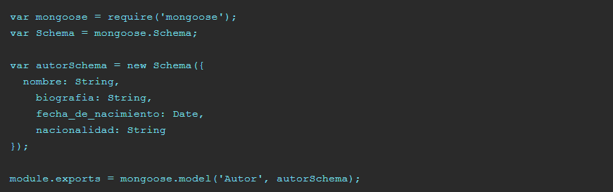
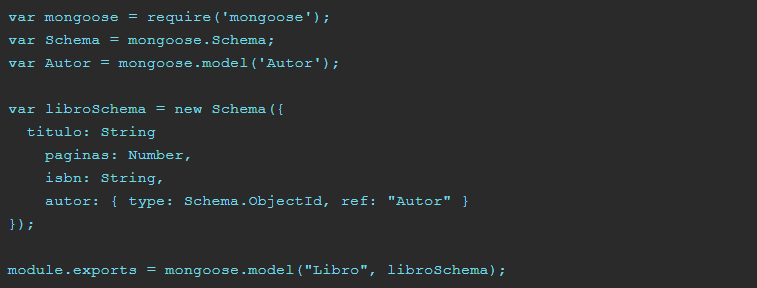
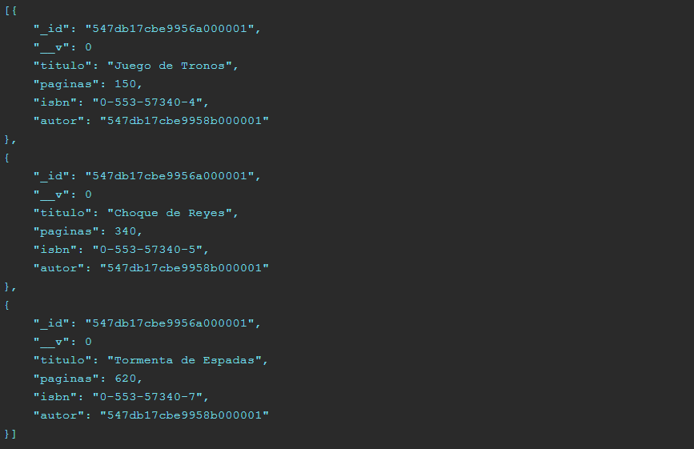
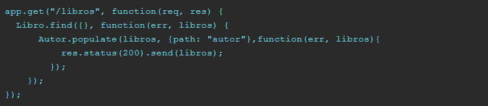

Relate models in MongoDB
MongoDB is a non-relational database, that is, it is not like the typical SQL databases (MySQL, Oracle, PostgreSQL, etc ...) where there are relationships between one table and another. Let's see a classic example.
Imagine a database of books. We would have a table with the titles of the books and another with the data of the authors. The author field in the table of books, would point to an ID or primary key of an author of the authors table. In MongoDB we can do something similar, by means of references and the populate method of MongoDB.
Let's continue with the previous example. An author model in Node.js using mongoose would be such that:
And suppose a simple model for book as follows:
At the beginning it was the only way to use JavaScript in web pages, but little by little it has gotten complicated.
If we look, for the author field in the book model we have used the Schema.ObjectId type and the reference to the Author model. This will allow us to establish the relationship between a field of one table and another.
But if we do not have SQL queries, and we ask for a list of all the books in the database, what data will come to us?
The first thing we would program would be this (in Express / Node.js):

And if we have several books registered in the database, we would return a JSON similar to this one:
In the author field we obtain the reference in ObjectID format of the author, but not its complete file. What happens if we want to show in a single JSON all the information to be able to paint it from a single call in our webapp? For that we need to make use of the populate method of MongoDB that also implements the mongoose library.
In our previous driver, we must expand with the next comand:
The line Author.populate (books, {path: "author"}, ...); takes the array of objects books and tells you that in the path author "popule" with the data of the model Author.
We can see that the _id object of the author field has been replaced by the complete author model to which it refers. In this way we get a behavior similar to the typical relational in the SQL databases in MongoDB.